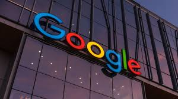

The funds would go towards the company’s “capital expenditure, research and development … and encompasses Google DeepMind with its pioneering AI research in science and healthcare,” Google said in a statement. Google was on Tuesday to open a data centre in Waltham Cross, eastern Hertfordshire, which it announced last year with a $1bn investment. Tuesday’s announcement would be on top of the monies already pledged, a Google spokesperson told AFP.
Trump will be accompanied by a “significant” number of US tech CEOs when he meets with Starmer at his country residence on Thursday, a senior US official said. They would include the heads of chip giant Nvidia and ChatGPT-maker Open AI, US media reported. “This visit will highlight a new science and technology partnership that will include billions of dollars in new investment,” the US official told reporters, including AFP. The two countries are set to sign agreements worth about 10bn, including one to speed up development of a new nuclear project as well as what British officials call “a world-leading tech partnership”. Starmer on Sunday already hailed plans by US finance firms, including PayPal and Citi Group to invest 1.25bn in the UK.